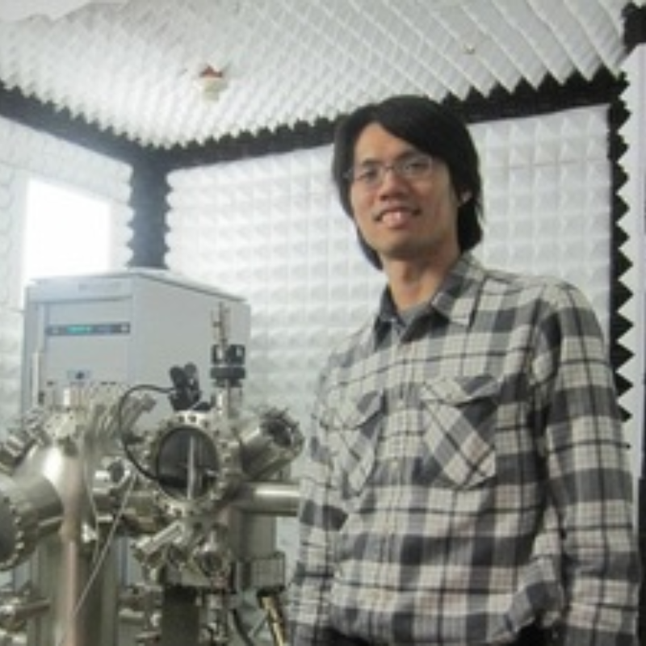

童世光 師 甜度:3.5/5.0 涼度:4.0/5.0
#不定時點名(不算分但會當參考)也可能不點名
#教得蠻詳細的，英文很標準
#調分滿多
霍夫曼 師 甜度:4.0/5.0 涼度:2.0/5.0
#英語授課很多外籍生
#口音很重

鄭弘泰 師 甜度:4.5/5.0 涼度:5.0/5.0
#沒有小考也不點名
#普物B中最搶手的老師(好過)
#佛系大調分 #最後會趕進度

林晏詳 師 甜度:4.0/5.0 涼度:4.0/5.0
#英語授課
#網路資訊少
#新教授
林志明 師 甜度:4.0/5.0 涼度:3.0/5.0
#點名當加分(總成績)
#平時隨機點名，會加在平常成績
#考試前會有兩次小考(通常都破百，有六百)
#有佛心大調分 #作業當加分，不一定會寫
劉怡維 師 甜度:??/5.0 涼度:??/5.0
#
洪在明 師 甜度:??/5.0 涼度:??/5.0
#